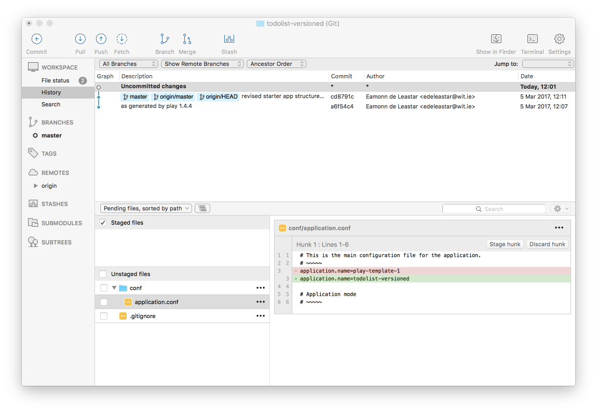
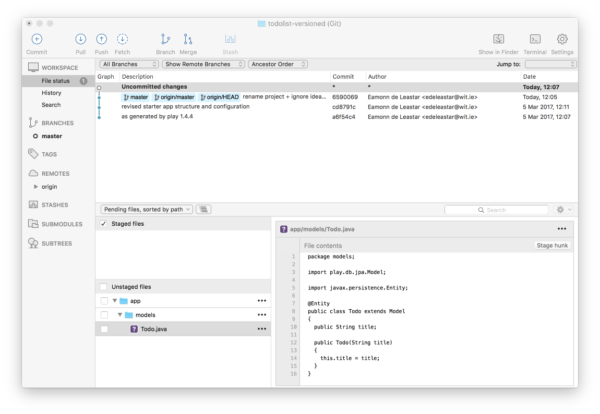
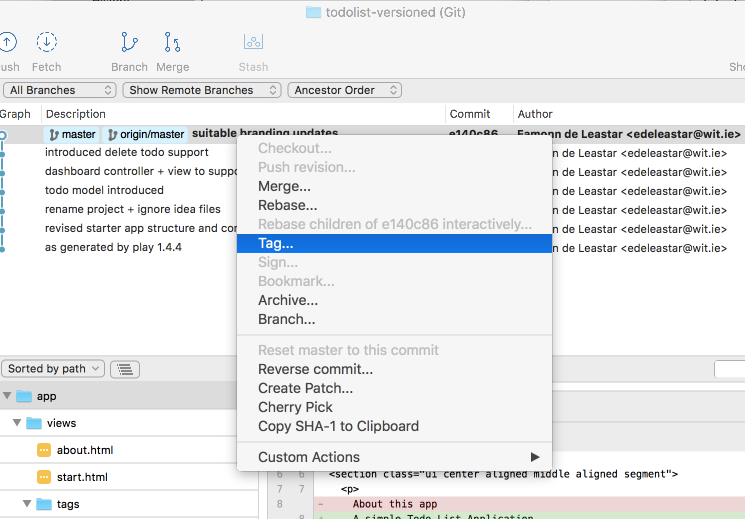
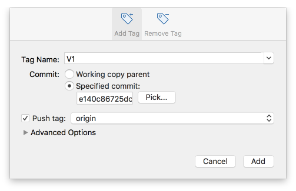
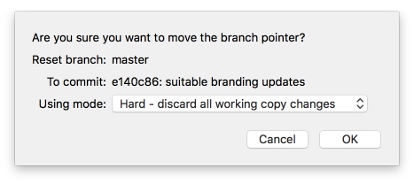
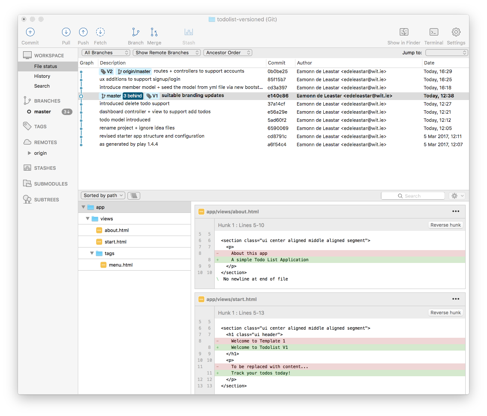

Objectives
Rebuild Todolist - this time committing to git version control as the app is composed.
todolist-versioned Project
We should have our project in Sourcetree from the last lab:

if we would like to use Intellj Idea - we can 'idealize' then app:
play idealize... and then import into Idea.
For this lab, keep both Idea & Sourcetree open at the same time.
The first thing to notice is the Sourcetree view will have changed slightly:

This is because the idealize command as generated some new files in our project:
- play-template-1.iml
- play-template-1.ipr
- play-template-1.iws
These are configuration file for Idea. We dont need to be concerned with them, and we dont want them committed to our repository as they are not code really. We need to tell git to ignore them.
The built in mechanism for ignoring files in git is to plate the file names, or patterns, in a file called .gitignore. We already have one:
.gitgnore
.settings
eclipse
documentation
tmp
.classpath
.projectEdit it now in Idea - and append paths to ignore the Idea files:
...
*.iml
*.ipr
*.iwsSave this file - and review the Sourcetree view again:

The change is subtle - git is no longer 'tracking' the idea files, but notice that it reporting the one of the files we are tracking - .gitignore - is showing up as having a change.
This change is noted, but not 'staged' or 'committed' yet. We will do both now
Staging
To stage the changes, we just select all the 'Unstaged files' check box - which reconfigures the view like this:
Commit
To commit, press the Cmomit button:
We are now invited to enter a message describing the change. Enter this message:
rename project + ignore idea filesand then press the blue Commit button on the bottom right. The Sourcetree will layout like this now:

Our change has been committed - and there are no outstanding changes. Notice, however, that the Push button is slightly changed:

The superscript '1' indicates that the local repo (the one on your workstation) is 1 ahead (in terms of changes) of the remote repo (the one you created on github.com).
If we press the push button - this dialog appears:

Pressing 'OK' here will push the channges, such that the local and remote repositories are in sync.
Check the repo on github.com to make sure is has the latest version:


For each step in this lab we will be proceeding through this workflow:
- Make some changes to the project
- Stage the changes
- Commit the changes
- Push them to the remote repository
- Check to see if they have arrived (sometimes).
Model
We can bring in a Todo model now:
app/models/Todo.java
package models;
import play.db.jpa.Model;
import javax.persistence.Entity;
@Entity
public class Todo extends Model
{
public String title;
public Todo(String title)
{
this.title = title;
}
}As soon as we save the file, notice the changes have been detected in Sourcetree:

We can stage, commit and push whenever we like - usually we stage and commit when we have introduced a significant change. We would only push occasionally.
Lets stage and commit now.
Stage:

Commit:


Note the message we entered on the commit - a short description of the change.
Dashboard Controller + View
Here is a new version of the Dashboard controller + view:
app/controllers/Dashboard.java
package controllers;
import models.Todo;
import play.Logger;
import play.mvc.Controller;
import java.util.List;
public class Dashboard extends Controller
{
public static void index()
{
Logger.info("Rendering Dashboard");
List<Todo> todolist = Todo.findAll();
render("dashboard.html", todolist);
}
public static void addTodo(String title)
{
Todo todo = new Todo(title);
todo.save();
Logger.info("Addint Todo" + title);
redirect("/dashboard");
}
}app/views/dashboard.html
#{extends 'main.html' /}
#{set title:'Dashboard' /}
#{menu id:"dashboard"/}
<section class="ui raised segment">
<header class="ui header">
Todo List
</header>
<table class="ui fixed table">
<thead>
<tr>
<th>Todo</th>
<th></th>
</tr>
</thead>
<tbody>
<div class="ui bulleted list">
#{list items:todolist, as:'todo'}
<tr>
<td> ${todo.title} </td>
#{/list}
</div>
</tbody>
</table>
</section>
<form class="ui stacked segment form" action="/dashboard/addtodo" method="POST">
<div class="field">
<label>Title</label>
<input placeholder="Title" type="text" name="title">
</div>
<button class="ui blue submit button">Add Todo</button>
</form>Run the app now - and verify that you can add todos.
Stage & Commit these changes - not the message used below:
Delete Todo Support
Now we can introduce delete support
conf/routes
GET /dashboard/deletetodo/{id} Dashboard.deleteTodoapp/controlers/Dashboard.java
public static void deleteTodo(Long id)
{
Todo todo = Todo.findById(id);
todo.delete();
Logger.info("Deleting " + todo.title);
redirect("/dashboard");
}app/views/dashboard.html
Revised list to include delete button:
...
#{list items:todolist, as:'todo'}
<tr>
<td> ${todo.title} </td>
<td> <a href="/dashboard/deletetodo/${todo.id} " class="ui tiny red button"> Delete </a> </td>
#{/list}
..Stage and commit the above - use the commit message:
introduced delete todo supportUX Modifications
The app is still branded as 'Template 1' - we can change this now:
app/views/tags/menu.html
...
<header class="ui header item"> <a href="/"> Todolist V1 </a></header>
...app/views/about.html
...
<p>
A simple Todo List Application
</p>
...app/views/start.html
...
<h1 class="ui header">
Welcome to Todolist V1
</h1>
<p>
Track your todos today!
</p>
...Stage and commit all of the above.
We also might like to Tag this version as being significant - perhaps call it 'V1'. This will enable is to get back the this version later more easily.
To do this, first make sure you have 'pushed' all updates to github. Then select the most recent change and right clock to select the context menu:

Select 'Tag' and in the subsequent dialog:

.. Enter 'V1'. Also, check the 'Push Tag' check box in the dialog as shown above. Then press add.
A 'V! tag' should now be visible in the commit history:
If you visit the repo on github - then this version will be marked as a Release:
Member Model
Introducing accounts we need a new model:
app/models/Member.java
package models;
import play.db.jpa.Model;
import javax.persistence.CascadeType;
import javax.persistence.Entity;
import javax.persistence.OneToMany;
import java.util.ArrayList;
import java.util.List;
@Entity
public class Member extends Model
{
public String firstname;
public String lastname;
public String email;
public String password;
@OneToMany(cascade = CascadeType.ALL)
public List<Todo> todolist = new ArrayList<Todo>();
public Member(String firstname, String lastname, String email, String password)
{
this.firstname = firstname;
this.lastname = lastname;
this.email = email;
this.password = password;
}
public static Member findByEmail(String email)
{
return find("email", email).first();
}
public boolean checkPassword(String password)
{
return this.password.equals(password);
}
}We can also bring in a data file to preload the model:
conf/data.yml
Todo(t1):
title: Make tea
Todo(t2):
title: Go for snooze
Todo(t3):
title: Make more tea
Member(m1):
firstname: homer
lastname: simpson
email: homer@simpson.com
password: secret
todolist:
- t1
- t2
Member(m2):
firstname: marge
lastname: simpson
email: marge@simpson.com
password: secret
todolist:
- t3We then need a new class to load this model:
app/Bootstrap.java
import java.util.List;
import play.*;
import play.jobs.*;
import play.test.*;
import models.*;
@OnApplicationStart
public class Bootstrap extends Job
{
public void doJob()
{
if (Member.count() == 0)
{
Fixtures.loadModels("data.yml");
}
}
}Stage and commit these changes now with a suitable message.
Accounts Views
We need a number of new views to support login/signup:
app/views/tags/welcomemenu.html
<nav class="ui menu">
<header class="ui header item"> <a href="#"> Todo List </a></header>
<div class="right menu">
<a id="signup" class="item" href="/signup"> Signup </a>
<a id="login" class="item" href="/login"> Login </a>
</div>
</nav>
<script>
$("#${_id}").addClass("active item");
</script>app/views/login.html
#{extends 'main.html' /}
#{set title:'login' /}
#{welcomemenu id:"login"/}
<div class="ui two column middle aligned grid basic segment">
<div class="column">
<form class="ui stacked segment form" action="/authenticate" method="POST">
<h3 class="ui header">Log-in</h3>
<div class="field">
<label>Email</label> <input placeholder="Email" name="email">
</div>
<div class="field">
<label>Password</label> <input type="password" name="password">
</div>
<button class="ui blue submit button">Login</button>
</form>
</div>
<div class="column">
<img class="ui image" src="/public/images/todo-2.jpg">
</div>app/views/signup.html
#{extends 'main.html' /}
#{set title:'Signup' /}
#{welcomemenu id:"signup"/}
<div class="ui two column grid basic middle aligned segment">
<div class="column">
<form class="ui stacked segment form" action="/register" method="POST">
<h3 class="ui header">Register</h3>
<div class="two fields">
<div class="field">
<label>First Name</label>
<input placeholder="First Name" type="text" name="firstname">
</div>
<div class="field">
<label>Last Name</label>
<input placeholder="Last Name" type="text" name="lastname">
</div>
</div>
<div class="field">
<label>Email</label>
<input placeholder="Email" type="text" name="email">
</div>
<div class="field">
<label>Password</label>
<input type="password" name="password">
</div>
<button class="ui blue submit button">Submit</button>
</form>
</div>
<div class="column">
<img class="ui image" src="/public/images/todo-1.png">
</div>
</div>In addition, the start view needs to be changed to include the welcomemenu instead of the main menu:
app/views/start.html
...
#{welcomemenu id:"start"/}
...Finally, the dashboard view will need a different delete button:
app/views/dashboard.html
...
<td> <a href="/dashboard/${member.id}/deletetodo/${todo.id} " class="ui tiny red button"> Delete </a> </td>
...(This replaces the existing delete button).
Stage and commit all of these changes now, with a suitable message.
Accounts Routes + Controllers
To finish the upgrade to accounts - we need this revised routes file (replace the existing one):
conf/routes
# Routes
# This file defines all application routes (Higher priority routes first)
# ~
GET / Start.index
# Accounts
GET /signup Accounts.signup
GET /login Accounts.login
POST /register Accounts.register
POST /authenticate Accounts.authenticate
GET /logout Accounts.logout
# Home page
GET /dashboard Dashboard.index
GET /dashboard/{id}/deletetodo/{todoid} Dashboard.deleteTodo
GET /about About.index
# Ignore favicon requests
GET /favicon.ico 404
# Map static resources from the /app/public folder to the /public path
GET /public/ staticDir:public
# Catch all
* /{controller}/{action} {controller}.{action}This new controller:
app/controllers/Accounts.java
package controllers;
import models.Member;
import play.Logger;
import play.mvc.Controller;
public class Accounts extends Controller
{
public static void signup()
{
render("signup.html");
}
public static void login()
{
render("login.html");
}
public static void register(String firstname, String lastname, String email, String password)
{
Logger.info("Registering new user " + email);
Member member = new Member(firstname, lastname, email, password);
member.save();
redirect("/");
}
public static void authenticate(String email, String password)
{
Logger.info("Attempting to authenticate with " + email + ":" + password);
Member member = Member.findByEmail(email);
if ((member != null) && (member.checkPassword(password) == true)) {
Logger.info("Authentication successful");
session.put("logged_in_Memberid", member.id);
redirect ("/dashboard");
} else {
Logger.info("Authentication failed");
redirect("/login");
}
}
public static void logout()
{
session.clear();
redirect ("/");
}
public static Member getLoggedInMember()
{
Member member = null;
if (session.contains("logged_in_Memberid")) {
String memberId = session.get("logged_in_Memberid");
member = Member.findById(Long.parseLong(memberId));
} else {
login();
}
return member;
}
}This is a new version of Dashboard:
app/controllers/Dashboard.java
package controllers;
import models.Member;
import models.Todo;
import play.Logger;
import play.mvc.Controller;
import java.util.List;
public class Dashboard extends Controller
{
public static void index()
{
Logger.info("Rendering Dashboard");
Member member = Accounts.getLoggedInMember();
List<Todo> todolist = member.todolist;
render("dashboard.html", member, todolist);
}
public static void addTodo(String title)
{
Member member = Accounts.getLoggedInMember();
Todo todo = new Todo(title);
member.todolist.add(todo);
member.save();
Logger.info("Adding Todo" + title);
redirect("/dashboard");
}
public static void deleteTodo(Long id, Long todoid)
{
Member member = Member.findById(id);
Todo todo = Todo.findById(todoid);
member.todolist.remove(todo);
member.save();
todo.delete();
Logger.info("Deleting " + todo.title);
redirect("/dashboard");
}
}See if the app runs now as expected, and that the todo items are kept separeaty by user. Also verify that we can delete todos.
Stage and commit all changes in this step - and tag this version 'V2'.
Exercises
Your repo should be structured something like this one now:
Exercise 1: Running an Earlier Version
In Sourcetree, select the V1 tagged commit, right click and select Reset master to this commit as shown here:

In the subsequent dialog, select 'Hard - diacard all working copy changes'

You will get a warning - which you can accept:

The project folder will now contain the V1 project.

You can run this version now - and make sure it is that version (no member support)
Exercise 2: Get back to the latest version
See if you can get back to V2 - it is more or less the same procedure as getting to V1, but in reverse.
Exercise 3: Clone the repo
Figure out how to clone the repo into another folder on your workstation. Once cloned, you can drag/drop the new copy int Sourtree alongside the original.
Idealize the new copy and import into Idea, and run it. (Continue to use eclipse if you like).
Make some changes in the new copy - for instance the signup and login files have links to images which do not exist. Find suitable images - and put them into /public/images. Make sure the names match what the forms expect.
Stage, commit and push these changes from the new copy.
Back in the original, pull the changes into this version. Make sure the changes have come over.